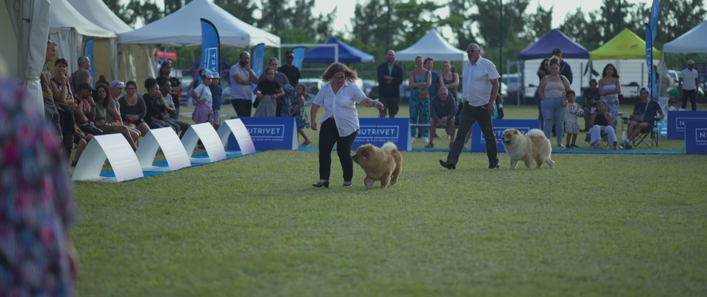

Le carnet péi de ton animal.
Les bons réflexes santé pour notre climat, quoi faire quand un animal est perdu ou trouvé, et les assos de l'île. Gratuit, sans compte.

Un animal perdu ou trouvé ?
Les 3 gestes, et le bon numéro selon ta commune.
Santé péi
Chaleur, crapaud, leptospirose, tiques, cyclone : quoi surveiller.
Les assos de l'île
Adopter, aider, devenir famille d'accueil.
Mon carnet
Vaccins, anti-tiques, vermifuge : les rappels de ton animal.
On t'oriente, ton vétérinaire décide. Kat'Pat' ne pose jamais de diagnostic. En cas de doute, appelle ton vétérinaire.
Les réflexes pour notre climat.
Chaud, humide, sans hiver : à La Réunion, certains dangers sont là toute l'année. Ouvre une fiche pour savoir quoi surveiller et quoi faire.
Ces fiches ne remplacent pas ton vétérinaire. Elles t'aident à reconnaître une urgence et à préparer ta question.
☎️ Centres antipoison vétérinaires
Ouverts de 8 h 30 à minuit, heure de métropole. Ton vétérinaire reste le premier à appeler.
Ramener chaque animal chez lui.
Les bons gestes dans l'ordre, et le bon contact selon ta commune. Pour diffuser une annonce, on passe par les groupes Facebook de ton quartier : on ne les remplace pas.
📍 Ta commune
📝 Préparer l'annonce
Remplis, copie, colle dans les groupes Facebook de ta commune. Rien n'est envoyé : tout reste sur ton téléphone.
Astuce : ajoute une photo nette dans ton post, et donne le numéro de puce seulement à la fourrière ou au vétérinaire.
Celles et ceux qui sauvent nos animaux.
Adopter, devenir famille d'accueil, donner un coup de main : passe par elles. Kat'Pat' les met en lumière, elles restent aux commandes.
Tu fais partie d'une asso ?
On vient filmer vos animaux à adopter et votre travail, gratuitement, pour les faire connaître. Écris-nous, et dis-nous aussi si une info ici est à corriger.
pix.i.art.pro@gmail.com
Les rappels de ton animal.
Note la date du dernier vaccin, de l'anti-tiques et du vermifuge. Kat'Pat' te montre ce qui arrive bientôt.
Ton carnet reste sur ton téléphone. Rien n'est envoyé, il n'y a pas de compte. Si tu vides les données de ton navigateur, le carnet s'efface. Les rythmes sont ceux que ton vétérinaire t'a donnés.